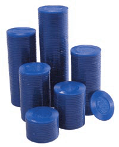

Reward yourself. Why not get free travel and gifts just for ordering your dental supplies from Benco Dental? And at no extra cost to you!
Join Benco's BluChip Frequent Buying Club and get the best value for your supply dollar. Plus, not only can you redeem Benco BluChips for air miles and brand-name merchandise from leading manufacturers, but you can also build your practice, attend a CE-accredited seminar, or earn credit select state-of-the-art dental equipment!
BluChips make the extra extraordinary!

Redemption options
Earning and redeeming BluChips
Earning Bonus BluChips
Tracking your account